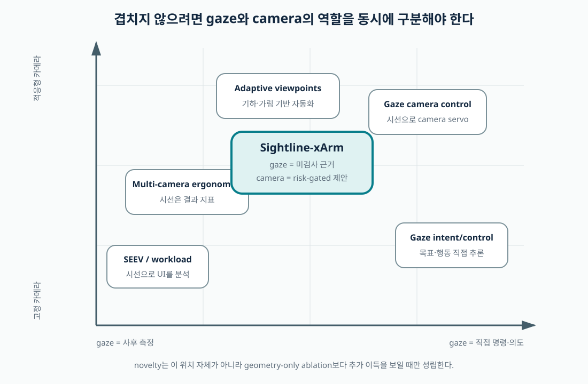

Gaze → intent/control
gaze로 목표·의도·로봇 명령을 추정한다. 이미 활발한 계열이므로 Sightline은 이 방향을 기여로 주장하지 않는다.
Related work · claim-by-claim map
이 문헌 지도는 논문 수를 늘리기 위한 목록이 아니다. 각 계열이 이미 만든 지식, Sightline과 가장 가까운 지점, 그대로 따라가면 중복되는 지점을 구분한다. 모든 링크는 출판사·학회·연구기관·공식 프로젝트의 1차 출처다.
Four lineages
시선을 어떻게 쓰는지와 카메라를 누가 바꾸는지를 분리하면 제안의 위치가 선명해진다.
gaze로 목표·의도·로봇 명령을 추정한다. 이미 활발한 계열이므로 Sightline은 이 방향을 기여로 주장하지 않는다.
fixation, transition, AOI dwell로 운영자의 시각 탐색과 인지부하를 설명한다. Sightline의 측정 타당도를 제공한다.
가림·가시성·작업 구성을 이용해 카메라 시점을 최적화한다. C2 geometry-only 조건의 직접 근거다.
단일·다중·자동 카메라가 성공률, 시선전환, 부하에 미치는 영향을 비교한다. “카메라가 많을수록 좋다”를 반박한다.

Gap audit
두 기술을 결합했다는 말은 기여가 아니다. 아래 표의 마지막 열을 물리 xArm 실험에서 검증해야 한다.
| 선행 계열 | 이미 알려진 것 | 남는 한계 | Sightline이 시험할 추가 주장 |
|---|---|---|---|
| Gaze-based goal inference | 조작 중 gaze가 목표 예측·shared autonomy에 유용할 수 있다. | 오인식이 곧 robot action에 반영될 수 있고, target 선택 문제가 중심이다. | gaze를 운동명령에서 분리한 채 “검사 공백”으로만 써도 오류를 줄이는가. |
| Passive eye-tracking analysis | AOI dwell·transition이 전략과 workload를 설명한다. | 대부분 사후 분석이라 UI를 언제 바꿀지 검증하지 않는다. | 사전 정의된 coverage 규칙을 온라인 view cue로 닫았을 때 인과 효과가 있는가. |
| Autonomous/adaptive viewpoint | robot geometry와 occlusion으로 유용한 카메라 시점을 고를 수 있다. | 운영자가 그 증거를 이미 확인했는지는 모른다. | 동일한 risk model에서 inspection deficit을 더한 C3가 C2보다 나은가. |
| Multi-camera ergonomics | 다중뷰는 성공률을 높일 수 있지만 saccade·인지부하를 늘릴 수 있다. | 누구에게 어느 순간 어느 view만 보여줄지는 충분히 답하지 않는다. | task success를 유지하며 view/gaze transition과 workload를 동시에 줄이는가. |
Primary-source library
검색어, 계열, 본 연구에서의 역할로 걸러 볼 수 있다. ‘경쟁’은 같은 결론을 노리는 연구, ‘기준선’은 반드시 넘어야 할 비교, ‘근거’는 설계·측정의 타당화, ‘경계’는 과도한 해석을 막는 자료다.
35명, 5개 카메라 모드를 비교한 Applied Ergonomics 연구. 다중 카메라는 성공률을 높였지만 인지부하와 saccade를 늘렸고 autonomous camera는 더 낮은 saccade rate를 보였다. Sightline이 반드시 넘어야 할 가장 가까운 결과다.
출판사 원문 페이지 ↗Rakita et al., RSS. 원격조작 중 가림을 줄이고 작업 관련 기하를 잘 보이는 adaptive viewpoint를 계획한다. Sightline의 C2 geometry-only 설계와 ‘가시성만으로 충분한가?’라는 ablation을 정당화한다.
저자 공식 프로젝트 ↗화면의 카메라 좌표와 조작 좌표가 어긋나면 성능이 나빠지고, 이를 교정하면 수행이 개선될 수 있음을 보인다. 본 실험은 모든 조건에서 camera/control frame을 같게 유지해야 한다.
arXiv 원문 ↗Fuchs & Belardinelli. simulated pick-and-place에서 gaze와 움직임으로 의도를 추정한다. gaze가 target·action intention의 증거가 될 수 있지만, Sightline은 이를 robot motion으로 연결하지 않는다는 경계를 만든다.
Frontiers CC BY 원문 ↗teleoperation 환경에서 salience, effort, expectancy, value로 시각주의 배분을 설명한다. AOI를 단순 dwell 목록이 아니라 task 가치와 전환 비용을 포함해 설계해야 한다는 근거다.
출판사 원문 페이지 ↗여러 영상이 있는 원격조작에서 gaze tracking으로 운영자의 시각행동을 분석한 직접 관련 계열. Sightline은 이를 사후 분석에서 online, risk-gated view assistance로 한 단계 확장해 시험한다.
PubMed Central 원문 ↗gaze로 로봇 카메라를 직접 움직이는 계열이 이미 존재함을 보여준다. Sightline은 gaze servo를 새로움으로 삼지 않고 고정 stream의 선택적 제시로 범위를 좁힌다.
PubMed Central 원문 ↗assistive robotic arm에서 gaze control의 입력 방식, 과제와 평가를 체계적으로 정리한다. gaze-to-command가 넓고 성숙한 계열임을 확인하고 Midas-touch·오인식 문제를 경계하게 한다.
PubMed Central 원문 ↗gaze를 활용하는 최신 manipulation assistance 연구. 정확한 문제·장비·평가 범위를 원문 기준으로 비교해야 하며, Sightline은 목표 예측보다 inspection-aware camera assistance에 기여를 제한한다.
arXiv 원문 ↗시선으로 grasp target을 지정하는 계열의 최신 예. 본 연구에서는 target 선택을 controller/task instruction에 남겨 기능과 실패모드를 분리한다.
arXiv 원문 ↗Aronson et al., RSS. gaze가 control input을 보완해 goal prediction에 기여할 수 있음을 시험한다. C3가 robot state만 쓰는 C2를 넘어야 한다는 incremental-value 논리를 제공한다.
CMU 저자 원고 PDF ↗Stanford Robotics Center의 gaze 기반 assistive-arm demonstration. 사회적 의미가 큰 응용이지만, Sightline의 대상은 장애 보조 target selection이 아니라 일반 화면 원격조작의 시각 정보 관리다.
Stanford 공식 데모 ↗공식 ROS 2 driver, MoveIt, RealSense D435i eye-in-hand, hand–eye calibration과 vision-guided grasping 예시를 제공한다. 구현 가능성의 근거이지 본 연구 성능의 근거는 아니다.
공식 GitHub 저장소 ↗연구용 eye tracker의 gaze data access, time synchronization, calibration 관련 공식 개발 자료. 실제 보유 장치와 라이선스에 맞는 API를 별도 확인해야 한다.
Tobii 공식 개발 문서 ↗gaze를 저장·전송해 행동을 분석·기록·시각화하는 analytical use에는 해당 권한이 요구될 수 있다. 연구 설계를 코드보다 먼저 확인해야 하는 필수 Gate다.
Tobii 공식 SDLA 안내 ↗조건에 맞는 문헌이 없습니다.
Evidence discipline
시각적으로 유사한 데모를 가져와 본 시스템이 검증된 것처럼 보이지 않도록 출처와 주장 범위를 함께 표시한다.
외부 그림에는 항상 “선행연구 자료 · 우리 결과 아님”을 붙인다.
참가자 수, simulation/physical, robot, task가 다르면 효과를 그대로 전이하지 않는다.
검색 요약이나 2차 블로그가 아닌 논문·저자 프로젝트·제조사 문서를 링크한다.
가장 가까운 geometry-only와 multi-camera baseline을 생략하지 않는다.